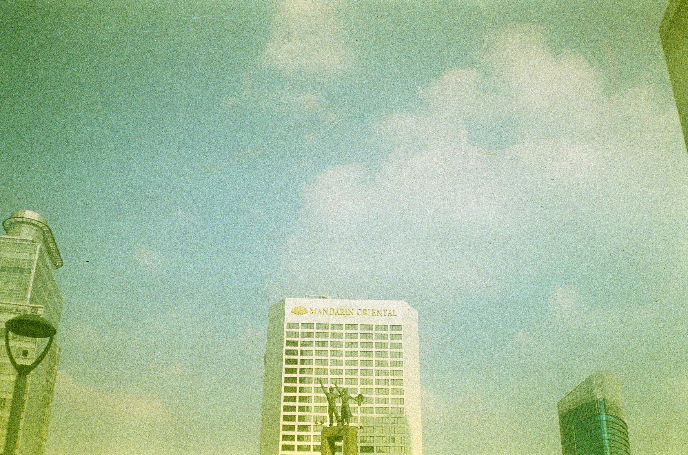

Merayakan HUT Jakarta ke-497 Melalui Lensa Kamera Analog
Jakarta, ibu kota Indonesia, baru saja merayakan hari ulang tahunnya yang ke-497. Dengan semaraknya kota yang terus berkembang menjadi pusat ekonomi, budaya, dan modernitas, kita seringkali lupa bahwa di balik hiruk-pikuknya, ada jejak kenangan yang tak lekang oleh waktu. Salah satu cara untuk menangkap esensi Jakarta yang klasik adalah melalui lensa kamera analog.
Mengapa Kamera Analog?
Di era digital seperti sekarang, kebanyakan orang lebih memilih kamera digital atau bahkan kamera ponsel yang praktis dan instan. Namun, kamera analog menghadirkan pengalaman berbeda. Setiap jepretan terasa lebih bermakna karena membutuhkan kesabaran dan keahlian dalam pengaturan pencahayaan, fokus, dan komposisi. Kesalahan kecil bisa membuat hasil gambar tidak sesuai harapan, tetapi justru di sanalah letak seninya. Ketidaksempurnaan adalah bagian dari keindahan fotografi analog.

Menangkap Jiwa Kota Di HUT Jakarta
Saat merayakan HUT Jakarta ke-497, kita disuguhi dengan banyak perayaan, mulai dari festival budaya hingga acara modern yang meriah. Namun, dengan menggunakan kamera analog, kita bisa menangkap momen-momen kecil yang sering kali terabaikan—kesibukan pedagang kaki lima, anak-anak yang bermain di taman kota, atau arsitektur unik yang menggambarkan perjalanan waktu di kota ini.
Tidak seperti kamera digital yang memungkinkan kita untuk mengambil ribuan foto dalam sehari, kamera analog memaksa kita untuk berhenti, berpikir, dan benar-benar memperhatikan sebelum menekan tombol rana. Film yang terbatas membuat setiap bidikan lebih berharga. Hal ini mengajarkan kita untuk lebih menghargai momen dan prosesnya, sesuatu yang mungkin sudah jarang kita temukan dalam fotografi modern.